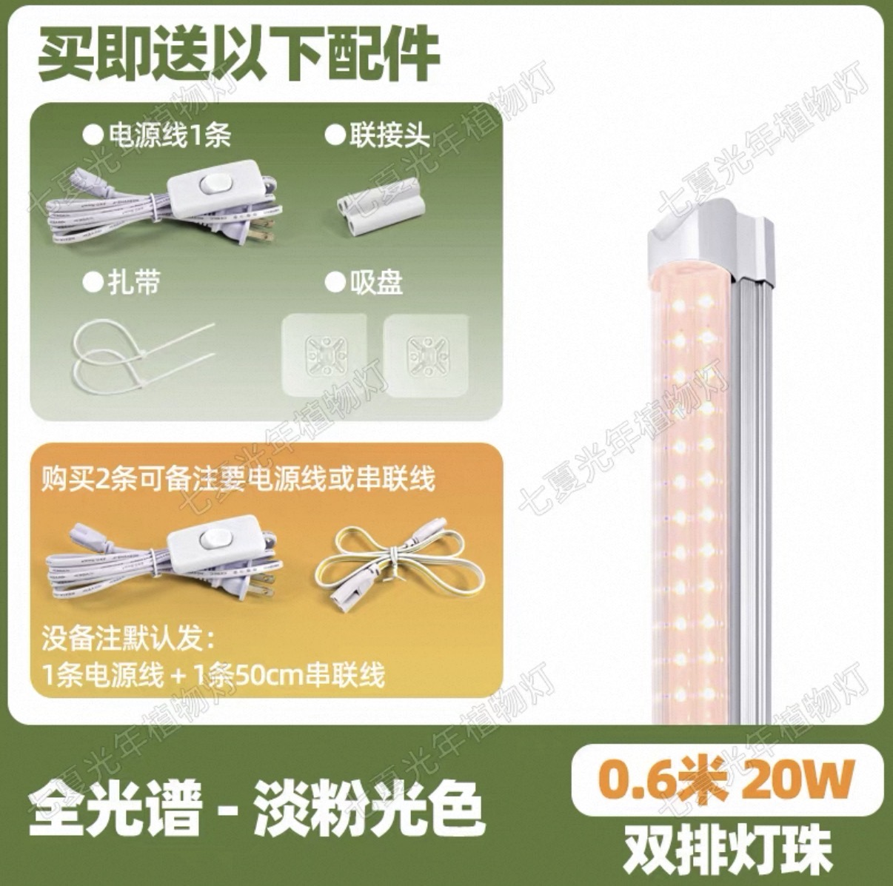
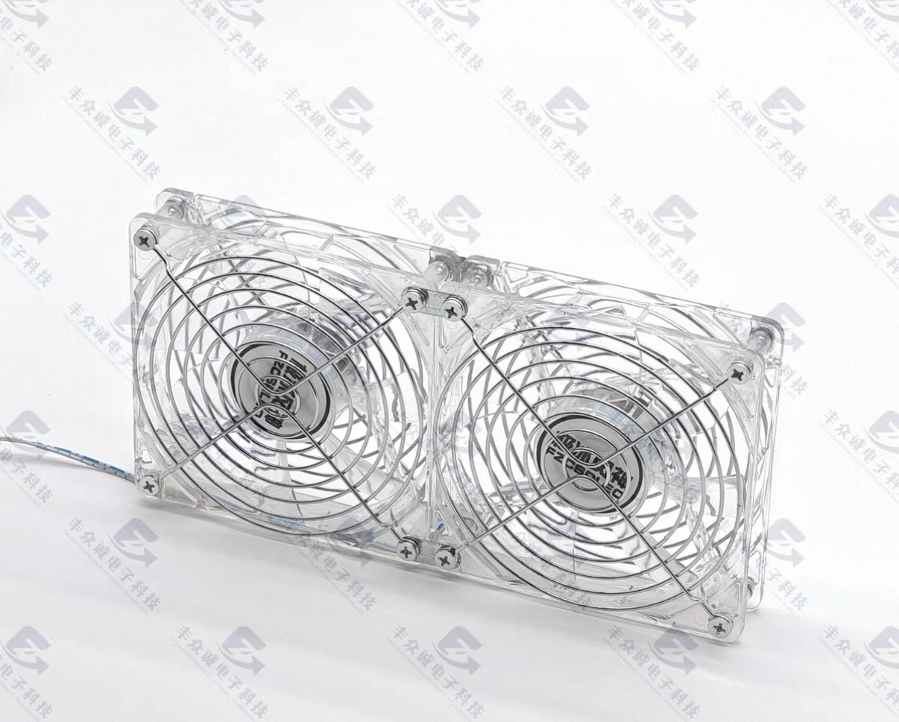

First, I will explain the content shown in the image on the left: this is a lighting product from China. It is a full-spectrum grow light with a pink tint, which helps plants develop better coloration. When purchasing the light tubes, the seller also includes power cables, connecting wires, zip ties, and suction cups for free. For lighting, I chose full-spectrum plant grow lights, which provide strong illumination while remaining energy-efficient and having good heat dissipation. Since my shelf has three levels, I installed six light tubes in total, with two lights on each level. The lights are connected in series using linking cables, so they can all be controlled with a single main switch. I also use a timer plug to control the lighting schedule automatically.
To improve heat dissipation for the light tube, I used plastic zip ties to secure a fan inside the greenhouse on the side of the shelf. While helping cool down the light, it also circulates the air inside the greenhouse, preventing water from sitting on the plants and reducing the risk of black rot caused by excessive humidity.
